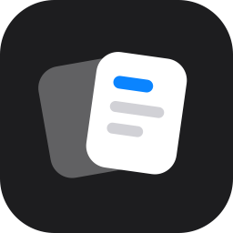

Find the right CRM for our team
Five options. One clear comparison.

DelegateA native Mac app, in developer preview
Your ideas, your tasks, and your AI agents.
Finally working from the same page.
macOS 15 or later · Apple silicon & Intel
Not notarized. Read before installing.
Make room for the work only you can do.
Five options. One clear comparison.
Tomorrow, 9:00 AM
Connected to the product canvas.
Itinerary ready for your eyes.
Some things are yours to do.
Some things are better delegated.
Talk or type into your inbox. Shape the draft, attach the files that matter, and stage a task before starting an agent. Personal tasks fit right in, too.
Include pricing, integrations, and a recommendation.
ResearchReport + tableMap a system, a launch, or a trip on a native canvas. Connect an agent to the relevant ideas, then turn that visual context into a task. Proposed canvas changes come back for review.
Progress is useful.
Something you can review is better.
See what the agent produced, ask for changes, and accept the result when it’s ready. Keep the brief, conversation, files, and review history with the task.
Anyone who wants a home for personal tasks and work delegated to AI agents. Use it for research, planning, organizing files, or building software. The developer preview is currently best suited to people comfortable setting up a coding-agent CLI.
Delegate runs Claude Code and Codex using their installed command-line tools and existing authentication. You need access to the provider you choose; its own usage limits and billing still apply. Detection of other tools does not mean they can all execute tasks yet.
Delegate stores its workspace locally. When you start an agent, the chosen provider processes the context sent to it under its own terms. Linked integrations also use their respective services. “Local-first” does not mean every model runs offline.
This is an early developer preview. Back up important files and review task access before running agents. Some integrations and recovery flows still need broader real-world testing. The iPhone app is not included.
This download is ad-hoc signed and has not been notarized by Apple. macOS may block it. It is intended for developers evaluating an early build, not a general release. The disk image includes installation notes and a SHA-256 checksum is available with the release. A notarized build will require an Apple Developer signing identity.
Version 0.1.0 preview 1 · macOS 15+
Apple silicon & Intel · Not notarized